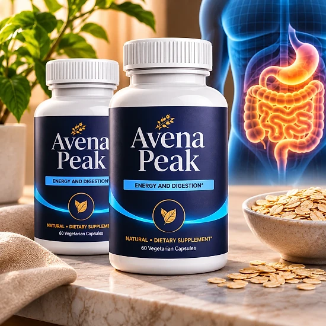
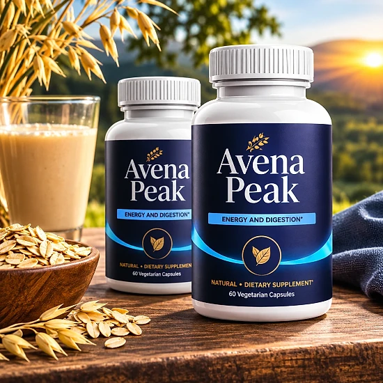
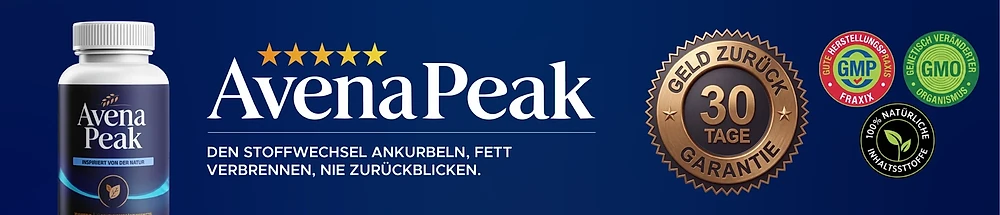

Was ist Avena Peak und wie wirkt es?
Avena Peak ist ein Nahrungsergänzungsmittel in Kapselform für Erwachsene. Auf der offiziellen Website, die den Namen als „AvenaPeak“ schreibt, beschreibt die Marke das Produkt als eine von der Natur inspirierte Formel, die darauf ausgelegt ist, Stoffwechsel, Gewichtsmanagement und allgemeines Wohlbefinden zu unterstützen. Im Vordergrund steht die einfache Anwendung mit nur einer Kapsel pro Tag.
Jede Flasche, auf der Website „Dose“ genannt, enthält 30 Kapseln. Die Formel kombiniert das Spurenelement Chrom mit Grüntee-Extrakt, Apfelweinessig, Berberin und Ingwerwurzel sowie kleineren Mengen an Zimtkassie, Bitterorange, Cayenne, Königinblume, Ginseng und Resveratrol. Die Marke veröffentlicht ein vollständiges Etikett mit den Mengen jedes Inhaltsstoffs pro Kapsel.
Wie wirkt es? Laut offizieller Website handelt es sich um eine Formel mit mehreren Ansätzen: Sie soll den Stoffwechsel, ein gesundes Gewichtsmanagement, die Appetitkontrolle und den Energiehaushalt unterstützen und antioxidative Unterstützung bieten. Das sind Aussagen des Herstellers. Auf dem Etikett selbst stehen keine Wirkversprechen, und auch wir machen hier keine darüber hinausgehenden Versprechen, etwa zu einer bestimmten Gewichtsabnahme.
Als Hintergrund nennt die Marke den modernen Alltag: Eine Ernährung mit viel Zucker und einfachen Kohlenhydraten und wenig Bewegung können es dem Körper laut Website erschweren, Stoffwechsel und Gewicht im Gleichgewicht zu halten. Das Kapselformat soll die regelmäßige Anwendung erleichtern.
Avena Peak wird über Digistore24 verkauft. Laut Etikett wird das Produkt in der EU durch Digistore24 MSLW Limited in Dublin vertrieben, und im Impressum nennt die Website ein Unternehmen, das die Marken Vital Roots und AvenaPeak betreibt.
Wichtig ist eine realistische Erwartung: Die Website weist selbst darauf hin, dass individuelle Ergebnisse variieren können, und ein Nahrungsergänzungsmittel ist kein Ersatz für eine abwechslungsreiche, ausgewogene Ernährung und eine gesunde Lebensweise.
Avena Peak ist ein Nahrungsergänzungsmittel. Es ist nicht dazu bestimmt, Krankheiten zu diagnostizieren, zu behandeln, zu heilen oder ihnen vorzubeugen, und es ersetzt weder ärztlichen Rat noch eine verordnete Behandlung.
Avena Peak Inhaltsstoffe
Laut dem auf der offiziellen Website veröffentlichten Etikett enthält eine Kapsel Avena Peak die folgenden Inhaltsstoffe:
Chrom (als Chrompicolinat), 100 µg: 250 % des Nährstoffbezugswerts, ein essenzielles Spurenelement.
Grüntee-Extrakt (Camellia sinensis), 154 mg und Apfelweinessig, 150 mg: die beiden größten Mengen der Formel.
Berberin-HCl, 85 mg: ein Pflanzenstoff, der zum Beispiel in der Berberitze vorkommt.
Ingwerwurzel (Zingiber officinale), 50 mg: eine bekannte Gewürzpflanze.
Zimtkassien-Rinden-Extrakt (Cinnamomum cassia), Bitterorangen-Extrakt (Citrus aurantium) und Cayenne-Frucht (Capsicum annuum), jeweils 20 mg.
Königinblumen-Blatt-Extrakt (Lagerstroemia speciosa) und Extrakt aus Panax ginseng, jeweils 5 mg, sowie Resveratrol aus japanischem Staudenknöterich, 1 mg.
Für die Pflanzenstoffe ist kein Nährstoffbezugswert festgelegt. Weitere Zutaten sind Hypromellose als Kapselhülle, mikrokristalline Cellulose als Füllstoff sowie Magnesiumsalze von Speisefettsäuren und Siliciumdioxid als Rieselhilfsmittel. Ein Detail am Rande: Das Etikett bezeichnet Panax ginseng als „Koreanischen Ingwer“; botanisch handelt es sich um Ginseng.
Dass die Marke jede Menge offenlegt, ist ein Pluspunkt: So können Sie die Formel vor dem Kauf mit Ihrem Arzt oder Apotheker besprechen und mit anderen Präparaten vergleichen, die Sie bereits einnehmen.
Avena Peak Nebenwirkungen
Die offizielle Website nennt keine bekannten Nebenwirkungen von Avena Peak, veröffentlicht aber klare Warnhinweise. Das Produkt ist nicht für Personen unter 18 Jahren und nicht für schwangere oder stillende Frauen geeignet. Die empfohlene Dosis darf nicht überschritten werden.
Die Marke rät ausdrücklich, sich vor der Verwendung von einem Arzt beraten zu lassen, insbesondere wenn Sie Medikamente einnehmen oder gesundheitlich eingeschränkt sind. Einen besonderen Hinweis gibt es zum Chrom: Laut Etikett und Website kann es die Insulinempfindlichkeit verstärken und den Blutzuckerspiegel beeinflussen. Diabetiker und Menschen mit Neigung zu Unterzuckerung sollen das Produkt deshalb nur unter ärztlicher Aufsicht einnehmen.
Allgemein bekannt ist außerdem, dass Berberin bei manchen Menschen den Magen-Darm-Trakt belasten und mit Arzneimitteln in Wechselwirkung treten kann. Grüntee- und Bitterorangen-Extrakt werden häufig als anregend beschrieben, und Cayenne und Ingwer sind für einen empfindlichen Magen nicht immer angenehm. Das ist ein weiterer Grund, die Einnahme vorher mit Ihrem Arzt abzustimmen.
Wie bei jedem neuen Nahrungsergänzungsmittel gilt: Beginnen Sie genau nach Verzehrempfehlung und achten Sie in den ersten Tagen darauf, wie Ihr Körper reagiert. Treten Beschwerden auf, setzen Sie die Einnahme ab und sprechen Sie mit Ihrem Arzt.
Verwenden Sie das Produkt nicht, wenn der Originalitätsverschluss beschädigt ist oder fehlt, und bewahren Sie es für Kinder unzugänglich auf. Die individuelle Verträglichkeit kann variieren.
Avena Peak Dosierung
Die Verzehrempfehlung ist einfach: Erwachsene nehmen eine (1) Kapsel täglich mit einem Glas Wasser ein, oder so, wie es eine medizinische Fachkraft empfiehlt. Eine Flasche mit 30 Kapseln reicht damit für etwa einen Monat.
Nehmen Sie die Kapsel am besten jeden Tag ungefähr zur gleichen Zeit ein, zum Beispiel zum Frühstück. Eine feste Routine hilft, regelmäßig zu bleiben, und genau diese Regelmäßigkeit stellt auch die Marke in den Vordergrund. Einen festen Zeitpunkt oder eine Angabe zur Einnahme mit oder ohne Mahlzeit nennt die Website nicht, deshalb gilt die Anweisung auf der Flasche.
Überschreiten Sie die empfohlene Tagesdosis nicht. Mehr Kapseln führen nicht zu besseren Ergebnissen, erhöhen aber die Menge an Chrom, Berberin und Pflanzenextrakten, die Sie zu sich nehmen. Wenn Sie Medikamente einnehmen, insbesondere zur Regulierung des Blutzuckers, oder eine Erkrankung haben, besprechen Sie die Einnahme vorher mit Ihrem Arzt.
Zur Aufbewahrung schreibt die Marke vor, das Produkt an einem kühlen, trockenen Ort bei unter 30 °C zu lagern und für Kinder unzugänglich aufzubewahren. Schließen Sie die Flasche nach jeder Entnahme gut.
Avena Peak ergänzt einen gesunden Lebensstil mit ausgewogener Ernährung, Bewegung und ausreichend Schlaf, ersetzt ihn aber nicht. Die Ergebnisse können von Person zu Person variieren.
Avena Peak – Rückerstattung
Avena Peak wird laut offizieller Website mit einer 30-Tage-Geld-zurück-Garantie verkauft, und zwar ohne Angabe von Gründen. Die Frist beginnt mit dem Zahlungsdatum. Zusätzlich weist die Website auf das gesetzliche Widerrufsrecht von 14 Tagen ab Erhalt der Ware hin.
Schritt 1 – Frist prüfen: Kontrollieren Sie anhand der Bestellbestätigung, die Sie per E-Mail erhalten haben, ob Sie sich noch innerhalb der 30 Tage ab dem Zahlungsdatum befinden.
Schritt 2 – Support kontaktieren: Schreiben Sie eine E-Mail an contact@vital-roots.site und teilen Sie mit, dass Sie eine Rückerstattung wünschen. Eine Begründung ist nicht erforderlich. Laut Widerrufsseite gehören „Rückerstattung“ in den Betreff sowie Ihr vollständiger Name und Ihre Bestellnummer in die Nachricht.
Schritt 3 – Ware zurücksenden: Senden Sie die Ware an c/o AvenaPeak, Kleine Esch 669, 2841 MK Moordrecht, Niederlande. Die ausführlichere Rückerstattungsrichtlinie ergänzt, dass alle Flaschen zurückgeschickt werden sollen, egal ob leer oder voll, geöffnet oder nicht, zusammen mit dem Lieferschein, und dass der Kunde die Kosten der Rücksendung trägt.
Schritt 4 – Erstattung abwarten: Nach Eingang der Rücksendung wird der Betrag laut Website über dasselbe Zahlungsmittel erstattet, das Sie bei der Bestellung verwendet haben; die Abwicklung erfolgt über Digistore24. Je nach Bank oder Kreditkartenanbieter kann es 5 bis 10 Tage dauern, bis die Gutschrift erscheint.
Lesen Sie die vollständigen Bedingungen auf der offiziellen Website vor der Bestellung und bewahren Sie die Bestellbestätigung sowie die Sendungsnummer der Rücksendung gut auf.
Avena Peak – Wo kaufen?
Avena Peak wird über seine offizielle Website avenapeak.site bestellt, und die Zahlung läuft über Digistore24. Laut Versandseite wird jede Bestellung möglichst innerhalb von 48 Stunden bearbeitet und versendet, und die Lieferung nach Deutschland dauert in der Regel 3 bis 5 Werktage, in die übrige EU 5 bis 10 Werktage.
Flaschen von unbekannten Händlern können identisch aussehen, doch nichts erlaubt es, ihre Herkunft oder ihre Lagerung zu überprüfen. Für ein Nahrungsergänzungsmittel ist das eine echte Frage der Qualität und Sicherheit, und ein Kauf außerhalb der offiziellen Website ist möglicherweise nicht durch die 30-Tage-Garantie abgedeckt.
Deshalb bestellen die meisten Käufer Avena Peak direkt an der Quelle. Die offizielle Website sichert den Zugang zum authentischen Produkt, zum Kundenservice und zur vollständigen Garantie.
Achten Sie beim Bezahlen darauf, dass Sie sich auf der offiziellen Avena Peak-Website befinden, um jede Fälschung zu vermeiden. Prüfen Sie die Adresse in der Browserzeile und den Bestellvorgang über Digistore24, denn nur so gelten die Garantie und der Kundenservice der Marke ohne Einschränkungen. Bei Fragen hilft der Kundenservice weiter, der laut Website innerhalb von 24 bis 48 Stunden antwortet.
Um sicherzugehen, dass Sie das Originalprodukt erhalten, besuchen die meisten Nutzer die offizielle Website.
Ist Avena Peak Betrug?
Nach den Informationen der offiziellen Website scheint Avena Peak kein Betrug zu sein. Es handelt sich um ein echtes Nahrungsergänzungsmittel, das über Digistore24 verkauft wird, eine etablierte Plattform, und es richtet sich an Erwachsene, die ihren Stoffwechsel und ihr Gewichtsmanagement unterstützen möchten.
Positiv fällt auf, dass die Marke ein vollständiges Etikett mit allen Mengen pro Kapsel, eine klare Verzehrempfehlung, ausführliche Warnhinweise samt Hinweis für Diabetiker, Geschäftsbedingungen, einen Hinweis auf das gesetzliche Widerrufsrecht und ein schrittweises Verfahren für die Rückerstattung veröffentlicht.
Es gibt aber Punkte, die man kennen sollte. Die Rücksendeadresse ist nicht einheitlich: Die meisten Seiten nennen die Niederlande, die Bestellseite eine Adresse in den USA, und das Impressum nennt ein Unternehmen in Brasilien. Als Kontakt nennt die Website zwei E-Mail-Adressen, die allgemeine Adresse von Digistore24 und eine Adresse der Schwestermarke Vital Roots, und die Telefonnummer unterscheidet sich zwischen Widerrufsseite und Impressum in einer Ziffer.
Außerdem gehen die Werbeaussagen der Website, etwa zur Appetitkontrolle, über das hinaus, was auf dem Etikett steht. Behalten Sie deshalb realistische Erwartungen.
Unser Rat: Lesen Sie das Etikett sorgfältig, bewahren Sie die Bestellbestätigung gut auf und sprechen Sie mit Ihrem Arzt, wenn Sie Medikamente einnehmen oder eine Erkrankung haben.
Für Erwachsene, die ein einfaches tägliches Nahrungsergänzungsmittel mit transparenter Formel als Begleitung zu einem gesunden Lebensstil suchen, kann Avena Peak eine Option sein, am besten über die offizielle Website bestellt und mit der 30-Tage-Garantie ohne Angabe von Gründen im Rücken.
Wer Produktdetails überprüfen oder die aktuelle Verfügbarkeit prüfen möchte, ist auf der offiziellen Avena Peak-Website am sichersten aufgehoben.

Verfügbarkeit auf der offiziellen Website prüfen
